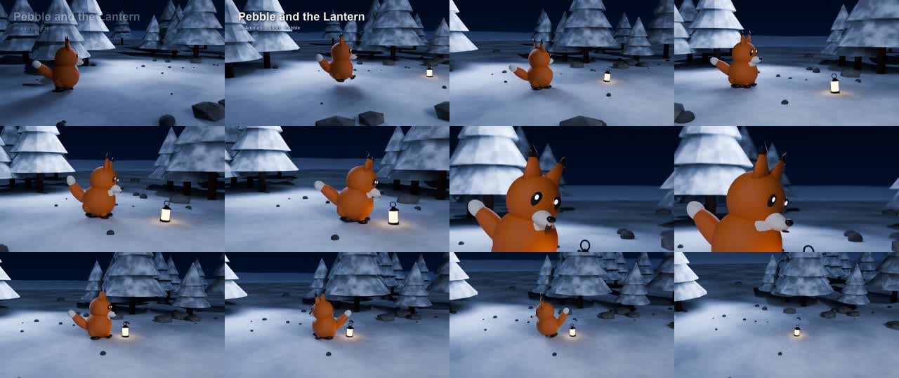
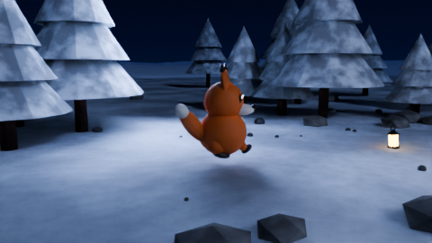
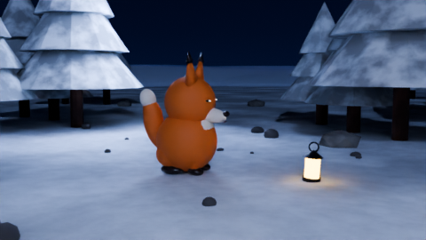
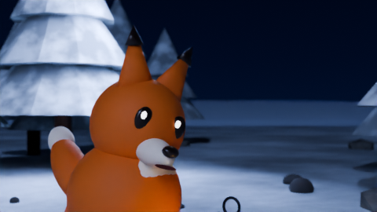
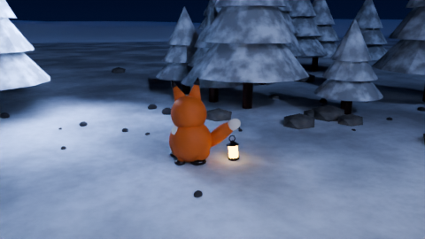

Pebble and the Lantern
A tiny fox finds a glowing lantern in a snowy forest at night. It whispers: 'Are you lost too?' Then it hops away.
| Provider | scripted |
|---|---|
| LLM calls / tokens | 4 / 0 |
| Shots | 4 |
| Duration | 22.0s |
| Render | final in 214s |
| Critic iterations | 1 |
Contact sheet

Shot list
| Shot | Type | Beat | Camera | Duration | Description |
|---|---|---|---|---|---|
| s1 | wide | enter | track | 5.5s | Establishing: the small creature hops into the snow at night. |
| s2 | medium | discover | dolly_in | 5.0s | Pebble notices the lantern, hesitates (anticipation), then approaches and leans in. |
| s3 | closeup | speak | dolly_in | 5.0s | Close-up: Pebble speaks softly to the lantern. |
| s4 | wide | exit | crane_up | 6.5s | Pebble turns, looks back at the lantern once, and heads home. |
Production log
0.0s
orchestr.
start
new film from prompt: "A tiny fox finds a glowing lantern in a snowy forest at night. It whispers: 'Are you lost too?' Then it hops away." (provider: scripted)
details
{
"options": {
"quality": "final",
"preview_engine": "cycles",
"critic_iterations": 3,
"device": "optix"
}
}3.6s
orchestr.
info
engine: Blender 5.3.0 (headless adapter)
3.6s
orchestr.
task
start director
3.6s
director
decision
'Pebble and the Lantern': 4 shots, 22.0s, snow at night, critter 'Pebble', prop lantern
details
{
"plan": {
"title": "Pebble and the Lantern",
"logline": "A tiny fox finds a glowing lantern in a snowy forest at night. It whispers: 'Are you lost too?' Then it hops away.",
"prompt": "A tiny fox finds a glowing lantern in a snowy forest at night. It whispers: 'Are you lost too?' Then it hops away.",
"style": {
"palette": {
"primary": "#E0712B",
"secondary": "#3E4A59",
"accent": "#7FE7FF",
"ground": "#E8EEF5",
"sky_zenith": "#070B1F",
"sky_horizon": "#1D2A55",
"sun": "#A9C2FF"
},
"mood": "wonder",
"shape_language": "rounded, chunky, friendly; bevelled edges; big readable silhouettes",
"lighting": "cool moonlight key, warm practical glow on the prop",
"notes": [
"keep Pebble the warmest saturated object on screen",
"the lantern is the visual focal point"
]
},
"setting": {
"kind": "snow",
"time_of_day": "night",
"density": 1.0
},
"characters": [
{
"id": "hero",
"kind": "critter",
"name": "Pebble",
"color": "#E0712B",
"eye_color": "#7FE7FF",
"scale": 1.0,
"species": "fox",
"voice": {
"voice": "af_bella",
"speaker": 3,
"pitch": 1.15,
"rate": 0.92,
"robot": 0.0
}
}
],
"props": [
{
"id": "prop",
"kind": "lantern",
"color": "#FFC857",
"location": [
1.3,
0.0,
0.0
]
}
],
"shots": [
{
"id": "s1",
"type": "wide",
"duration": 5.5,
"beat": "enter",
"description": "Establishing: the small creature hops into the snow at night.",
"camera_move": "track",
"subject": "hero"
},
{
"id": "s2",
"type": "medium",
"duration": 5.0,
"beat": "discover",
"description": "Pebble notices the lantern, hesitates (anticipation), then approaches and leans in.",
"camera_move": "dolly_in",
"subject": "both"
},
{
"id": "s3",
"type": "closeup",
"duration": 5.0,
"beat": "speak",
"description": "Close-up: Pebble speaks softly to the lantern.",
"camera_move": "dolly_in",
"subject": "hero"
},
{
"id": "s4",
"type": "wide",
"duration": 6.5,
"beat": "exit",
"description": "Pebble turns, looks back at the lantern once, and heads home.",
"camera_move": "crane_up",
"subject": "both"
}
],
"dialogue": [
{
"id": "line1",
"character": "hero",
"text": "Are you lost too?",
"shot": "s3",
"at": 1.2
}
],
"fps": 24
}
}3.6s
orchestr.
task
done director in 0.0s
3.6s
orchestr.
task
start voice
6.6s
voice
audio
line1 'Are you lost too?' -> kokoro 1.15s, 7 mouth cues via rhubarb, starts frame 282
details
{
"line": "line1"
}7.4s
voice
audio
music bed: mood 'wonder', 22.0s; mixed with dialogue ducking -12 dB -> mix.wav
7.4s
orchestr.
task
done voice in 3.8s
7.4s
orchestr.
task
start asset
8.2s
asset
batch
Build the snow set (night) -> b-0001: ok, created 189, modified 189 (838 ms)
details
{
"batch_id": "b-0001",
"intent": "Build the snow set (night)",
"n_ops": 196,
"ok": true,
"created": [
"set_ground",
"set_pebble_0",
"set_pebble_1",
"set_pebble_2",
"set_pebble_3",
"set_pebble_4",
"set_pebble_5",
"set_pebble_6",
"set_pebble_7",
"set_pebble_8",
"set_pebble_9",
"set_pebble_10",
"set_pebble_11",
"set_pebble_12",
"set_pebble_13",
"set_pebble_14",
"set_pebble_15",
"set_pebble_16",
"set_pebble_17",
"set_pebble_18",
"set_pebble_19",
"set_pebble_20",
"set_pebble_21",
"set_pebble_22",
"set_pebble_23",
"set_pebble_24",
"set_pebble_25",
"set_pebble_26",
"set_pebble_27",
"set_pebble_28",
"set_pebble_29",
"set_pebble_30",
"set_pebble_31",
"set_pebble_32",
"set_pebble_33",
"set_pebble_34",
"set_pebble_35",
"set_trunk_0",
"set_leaves_0_0",
"set_leaves_0_1",
"set_leaves_0_2",
"set_trunk_1",
"set_leaves_1_0",
"set_leaves_1_1",
"set_leaves_1_2",
"set_trunk_2",
"set_leaves_2_0",
"set_leaves_2_1",
"set_leaves_2_2",
"set_trunk_3"
],
"errors": [],
"warnings": []
}8.6s
asset
batch
Build Pebble the critter (rigged: root/body/head/eyes/mouth/arms) -> b-0002: ok, created 30, modified 24 (328 ms)
details
{
"batch_id": "b-0002",
"intent": "Build Pebble the critter (rigged: root/body/head/eyes/mouth/arms)",
"n_ops": 46,
"ok": true,
"created": [
"hero_root",
"hero_body",
"hero_belly",
"hero_head_pivot",
"hero_head",
"hero_antenna_pivot",
"hero_tail",
"hero_tail_tip",
"hero_ear_L",
"hero_ear_tip_L",
"hero_eye_L",
"hero_eye_glint_L",
"hero_haunch_L",
"hero_foot_L",
"hero_arm_pivot_L",
"hero_arm_L",
"hero_paw_L",
"hero_ear_R",
"hero_ear_tip_R",
"hero_eye_R",
"hero_eye_glint_R",
"hero_haunch_R",
"hero_foot_R",
"hero_arm_pivot_R",
"hero_arm_R",
"hero_paw_R",
"hero_muzzle",
"hero_rig",
"hero_mouth",
"hero_nose"
],
"errors": [],
"warnings": []
}8.7s
asset
batch
Build the lantern prop -> b-0003: ok, created 7, modified 4 (114 ms)
details
{
"batch_id": "b-0003",
"intent": "Build the lantern prop",
"n_ops": 9,
"ok": true,
"created": [
"prop",
"prop_pivot",
"prop_base",
"prop_glass",
"prop_cap",
"prop_handle",
"prop_light"
],
"errors": [],
"warnings": []
}8.7s
orchestr.
task
done asset in 1.3s
8.7s
orchestr.
task
start animator
9.1s
animator
batch
Animate Pebble: 4 shots, 11743 keys (anticipation, overshoot, follow-through, lip sync) -> b-0004: ok, modified 11 (295 ms)
details
{
"batch_id": "b-0004",
"intent": "Animate Pebble: 4 shots, 11743 keys (anticipation, overshoot, follow-through, lip sync)",
"n_ops": 27,
"ok": true,
"created": [],
"errors": [],
"warnings": []
}9.1s
animator
decision
performance per shot: {'s1': {'energy': 0.6, 'speed': 1.0, 'head_tilt': 0, 'reach': False, 'bounce': False, 'look_around': True}, 's2': {'energy': 0.8, 'speed': 1.0, 'head_tilt': 0, 'reach': False, 'bounce': False, 'look_around': False}, 's3': {'energy': 0.5, 'speed': 1.0, 'head_tilt': 12, 'reach': True, 'bounce': True, 'look_around': False}, 's4': {'energy': 0.5, 'speed': 1.0, 'head_tilt': 0, 'reach': False, 'bounce': False, 'look_around': False}}
details
{
"performance": {
"s1": {
"energy": 0.6,
"speed": 1.0,
"head_tilt": 0,
"reach": false,
"bounce": false,
"look_around": true
},
"s2": {
"energy": 0.8,
"speed": 1.0,
"head_tilt": 0,
"reach": false,
"bounce": false,
"look_around": false
},
"s3": {
"energy": 0.5,
"speed": 1.0,
"head_tilt": 12,
"reach": true,
"bounce": true,
"look_around": false
},
"s4": {
"energy": 0.5,
"speed": 1.0,
"head_tilt": 0,
"reach": false,
"bounce": false,
"look_around": false
}
}
}9.1s
orchestr.
task
done animator in 0.4s
9.1s
orchestr.
task
start camera
9.2s
camera
batch
Light the scene: cool moonlight key, warm practical glow on the prop -> b-0005: ok, created 3 (110 ms)
details
{
"batch_id": "b-0005",
"intent": "Light the scene: cool moonlight key, warm practical glow on the prop",
"n_ops": 5,
"ok": true,
"created": [
"light_key",
"light_fill",
"light_rim"
],
"errors": [],
"warnings": []
}9.2s
camera
decision
s1 wide/track: lens 30mm, az -8°, fill 0.40, camera [-3.933, -5.035, 1.5] -> aim [-2.205, -0.143, 0.695]
details
{
"shot": "s1",
"camera": {
"azimuth": -8,
"height": 1.5,
"lens": 30,
"fill": 0.4,
"move": "track"
}
}9.2s
camera
decision
s2 medium/dolly_in: lens 40mm, az 18°, fill 0.55, camera [1.709, -4.722, 1.15] -> aim [0.175, 0.0, 0.626]
details
{
"shot": "s2",
"camera": {
"azimuth": 18,
"height": 1.15,
"lens": 40,
"fill": 0.55,
"move": "dolly_in"
}
}9.2s
camera
decision
s3 closeup/dolly_in: lens 55mm, az 42°, fill 0.95, camera [2.819, -2.464, 0.88] -> aim [0.869, 0.242, 0.93]
details
{
"shot": "s3",
"camera": {
"azimuth": 42,
"height": 0.88,
"lens": 55,
"fill": 0.95,
"move": "dolly_in"
}
}9.2s
camera
decision
s4 wide/crane_up: lens 30mm, az -8°, fill 0.40, camera [0.219, -5.024, 1.5] -> aim [0.925, 0.0, 0.626]
details
{
"shot": "s4",
"camera": {
"azimuth": -8,
"height": 1.5,
"lens": 30,
"fill": 0.4,
"move": "crane_up"
}
}9.3s
camera
batch
Cameras for 4 shots with cuts -> b-0006: ok, created 8, modified 6 (110 ms)
details
{
"batch_id": "b-0006",
"intent": "Cameras for 4 shots with cuts",
"n_ops": 18,
"ok": true,
"created": [
"cam_s1_aim",
"cam_s1",
"cam_s2_aim",
"cam_s2",
"cam_s3_aim",
"cam_s3",
"cam_s4_aim",
"cam_s4"
],
"errors": [],
"warnings": []
}9.3s
orchestr.
task
done camera in 0.2s
9.3s
orchestr.
task
start review
12.7s
critic
critique
iter 1 s1 (wide): PASS

details
{
"iteration": 1,
"shot": "s1",
"verdict": "PASS",
"issues": [],
"stats": {
"mean": 0.371,
"black": 0.007,
"white": 0.0
},
"report": {
"motion": {
"hero_root": 4.741
},
"mid_frame": {
"66": {
"camera": "cam_s1",
"subjects": {
"hero_root": {
"min_z": 0.137,
"center": [
-1.996,
-0.054,
0.624
],
"screen": [
0.404,
0.347,
0.594,
0.744
],
"behind_camera": false,
"visible_fraction": 1.0,
"screen_height": 0.397
}
},
"mouth": 0.0
}
}
}
}12.7s
critic
critique
iter 1 s2 (medium): PASS

details
{
"iteration": 1,
"shot": "s2",
"verdict": "PASS",
"issues": [],
"stats": {
"mean": 0.401,
"black": 0.023,
"white": 0.0
},
"report": {
"motion": {
"hero_root": 1.621,
"prop": 0.153
},
"mid_frame": {
"192": {
"camera": "cam_s2",
"subjects": {
"hero_root": {
"min_z": 0.001,
"center": [
-0.066,
-0.007,
0.474
],
"screen": [
0.328,
0.268,
0.539,
0.789
],
"behind_camera": false,
"visible_fraction": 1.0,
"screen_height": 0.521
},
"prop": {
"min_z": -0.006,
"center": [
1.317,
-0.009,
0.31
],
"screen": [
0.709,
0.238,
0.759,
0.409
],
"behind_camera": false,
"visible_fraction": 1.0,
"screen_height": 0.172
}
},
"mouth": 0.0
}
}
}
}12.7s
critic
critique
iter 1 s3 (closeup): PASS

details
{
"iteration": 1,
"shot": "s3",
"verdict": "PASS",
"issues": [],
"stats": {
"mean": 0.309,
"black": 0.001,
"white": 0.0
},
"report": {
"motion": {
"hero_head": 0.11,
"prop": 0.163
},
"mid_frame": {
"296": {
"camera": "cam_s3",
"subjects": {
"hero_head": {
"min_z": 0.504,
"center": [
0.642,
0.025,
0.802
],
"screen": [
0.246,
0.186,
0.495,
0.625
],
"behind_camera": false,
"visible_fraction": 1.0,
"screen_height": 0.439
},
"prop": {
"min_z": -0.01,
"center": [
1.324,
0.019,
0.309
],
"screen": [
0.55,
-0.287,
0.659,
0.09
],
"behind_camera": false,
"visible_fraction": 0.239,
"screen_height": 0.377
}
},
"facing_deg": 25.6,
"mouth": 0.83
}
}
}
}12.7s
critic
critique
iter 1 s4 (wide): PASS

details
{
"iteration": 1,
"shot": "s4",
"verdict": "PASS",
"issues": [],
"stats": {
"mean": 0.422,
"black": 0.005,
"white": 0.0
},
"report": {
"motion": {
"hero_root": 6.134,
"prop": 0.197
},
"mid_frame": {
"450": {
"camera": "cam_s4",
"subjects": {
"hero_root": {
"min_z": -0.004,
"center": [
0.61,
0.101,
0.46
],
"screen": [
0.397,
0.308,
0.566,
0.678
],
"behind_camera": false,
"visible_fraction": 1.0,
"screen_height": 0.371
},
"prop": {
"min_z": -0.01,
"center": [
1.273,
0.017,
0.309
],
"screen": [
0.532,
0.327,
0.564,
0.434
],
"behind_camera": false,
"visible_fraction": 1.0,
"screen_height": 0.107
}
},
"mouth": 0.0
}
}
}
}12.7s
critic
critique
iteration 1: all shots pass
12.7s
orchestr.
task
done review in 3.4s
12.7s
orchestr.
task
start edit
12.9s
editor
batch
Set up the edit: cycles 960x540, soundtrack on the VSE, save .blend -> b-0007: ok, created 1 (231 ms)
details
{
"batch_id": "b-0007",
"intent": "Set up the edit: cycles 960x540, soundtrack on the VSE, save .blend",
"n_ops": 3,
"ok": true,
"created": [
"soundtrack"
],
"errors": [],
"warnings": []
}12.9s
editor
render
rendering 528 frames (22.0s) with cycles at 960x540, 16 samples ...
226.7s
editor
render
rendered in 214s (0.40s/frame) on OPTIX: NVIDIA GeForce RTX 5060 Laptop GPU
details
{
"render_seconds": 213.8
}235.3s
editor
render
title overlay 'Pebble and the Lantern' over the opening shot
235.6s
editor
render
final cut -> output\fox-lantern\final.mp4 (2.0 MB)
details
{
"output": "output\\fox-lantern\\final.mp4",
"probe": {
"programs": [],
"stream_groups": [],
"streams": [
{
"codec_name": "h264",
"codec_type": "video",
"width": 960,
"height": 540
},
{
"codec_name": "aac",
"codec_type": "audio"
},
{
"codec_name": "mov_text",
"codec_type": "subtitle"
}
],
"format": {
"duration": "22.000000"
}
}
}235.7s
orchestr.
task
done edit in 223.0s
236.2s
orchestr.
done
finished in 236s; LLM calls 4, tokens 0
details
{
"artifacts": {
"lines": {
"line1": {
"path": "output\\fox-lantern\\audio\\line1.wav",
"engine": "kokoro",
"duration": 1.152,
"lipsync": "rhubarb",
"start_s": 11.708,
"cues": 7
}
},
"music": "output\\fox-lantern\\audio\\music_bed.wav",
"mix": "output\\fox-lantern\\audio\\mix.wav",
"hero_parts": 30,
"asset_info": {
"prop_height": 0.42,
"hero_height": 1.3900000000000001,
"head_z": 0.8,
"head_top": 1.3900000000000001
},
"single_shots": [
"s3"
],
"critic_history": [
{
"iteration": 1,
"issues": 0,
"blockers": 0,
"messages": []
}
],
"edit_mlt": "output\\fox-lantern\\edit.mlt",
"final": "output\\fox-lantern\\final.mp4",
"contact_sheet": "output\\fox-lantern\\log\\contact_sheet.jpg",
"render_seconds": 213.8,
"quality": "final",
"llm_usage": {
"provider": "scripted",
"calls": 4,
"tokens": 0
},
"usda": "output\\fox-lantern\\scene.usda"
}
}